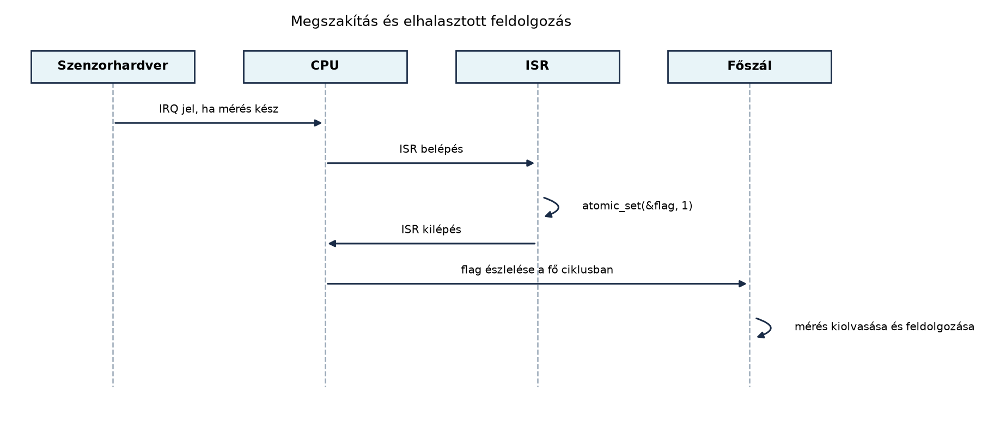

A TerraSense ts-node szenzorcsomópontjában a
hőmérséklet- és páratartalom-szenzor általában nem folyamatosan ad
értéket, hanem egy mérés végén egy hardveres jelzéssel, úgynevezett
megszakítással értesíti a mikrovezérlőt. Ha a program egy ciklusban
állandóan kérdezgetné a szenzort, hogy elkészült-e a mérés, akkor
feleslegesen égetné az energiát, és a válaszidő is rosszabb lenne. A
megszakítás az a mechanizmus, amellyel a hardver maga szakítja félbe a
normál programfutást, amikor egy fontos esemény történt. Ebben az
alfejezetben a megszakítások, a megszakításkezelő rutinokra vonatkozó
szabályok, valamint a megszakítás és a főprogram közötti biztonságos
adatmegosztás alapjait tanuljuk meg, a ts-node adatgyűjtési
ciklusára építve.
A mikrovezérlőben futó program normál végrehajtását hardveres események szakíthatják meg: egy GPIO-vonal szintet vált, egy időzítő lejár, egy ADC-átalakítás befejeződik, vagy egy soros port bájtot vesz. Az ilyen eseményre a CPU félbeszakítja az aktuális utasításfolyamot, elmenti a visszatéréshez szükséges állapotot, és egy meghatározott címen, az úgynevezett megszakításvektor-táblában található rutinra ugrik. Ezt a rutint megszakításkezelőnek (Interrupt Service Routine, ISR) nevezzük.
Definíció. A megszakítás (interrupt) olyan aszinkron hardveres vagy szoftveres jel, amely az aktuálisan futó program végrehajtását félbeszakítja, és egy rögzített kezelőrutinra adja a vezérlést. A megszakításkezelő (ISR) az a rövid, nem blokkoló függvény, amely a megszakítás okát lekezeli, és a további munkát általában a főszálra halasztja.
A megszakításoknak általában prioritásuk van. Ha
egyszerre több megszakítás van függőben, a megszakításvezérlő a magasabb
prioritásút szolgálja ki előbb. Sok mikrovezérlőnél egy magasabb
prioritású megszakítás megszakíthatja egy alacsonyabb prioritású ISR
futását is; ezt nevezzük beágyazott megszakításkezelésnek. A
ts-node esetében például a rádió vételi megszakítása kaphat
magasabb prioritást, mint a szenzor kész jelzése, hogy a kommunikációs
időzítés ne csússzon meg.
Az esemény bekövetkezésétől az ISR első utasításának végrehajtásáig eltelt időt megszakítási késleltetésnek (interrupt latency) nevezzük. Ez hardveres tényezőkből (a CPU-nak be kell fejeznie az aktuális utasítást, el kell mentenie a regisztereket) és szoftveres tényezőkből áll (például a kernel ideiglenesen letilthatja a megszakításokat). A késleltetés nagysága és ingadozása (jitter) kritikus lehet valós idejű vezérlésnél, ezért az ISR-t úgy tervezzük, hogy a legrövidebb idő alatt végezzen.

Az ábrán látható, hogy a hardveres esemény kiváltja az ISR-t, az ISR azonban csak egy atomi jelzést állít be, majd azonnal visszatér. A tényleges munkát a főszál végzi el, amikor legközelebb ellenőrzi a jelzést. Ez a minta a későbbi Szinkronizáció és üzenetátadás: mutex, szemafor, üzenetsor, work queue alfejezetben részletesen is visszaköszön.
A megszakításkezelő kontextusában nem ugyanazok az erőforrások állnak rendelkezésre, mint egy normál szálban. A legfontosabb szabályok:
sleep, mutex_lock,
sem_take vagy olyan soros port kiírást, amely kiüríti a
puffert.malloc és társai tipikusan nem megszakításbiztosak, és a
foglalás várakozhat, ezért használatuk az ISR-ben hibás működéshez
vezethet.Az első három szabály együtt azt jelenti, hogy az ISR tipikusan csak egy esemény bekövetkeztét jelzi, például beállít egy flaget, növel egy számlálót, vagy üzenetet helyez egy ISR-biztos várakozási sorba. A hosszabb feldolgozást a főszálra vagy egy dedikált munkaszálra kell halasztani.
A megszakításkezelő és a főprogram közös memórián osztozik, ezért
bármely változót, amelyet az egyik oldal ír, a másik pedig olvas,
versenyhelyzet fenyeget. Tipikus példa a ts-node-ban egy
mérési számláló növelése:
volatile unsigned int sample_count = 0;
void sensor_ready_isr(void)
{
sample_count++; /* veszélyes! */
}A sample_count++ több gépi utasításból állhat: a CPU
betölti az értéket egy regiszterbe, növeli, majd visszaírja. Ha a főszál
ugyanekkor olvassa a változót, előfordulhat, hogy a növelés két lépése
közötti köztes állapotot látja, vagy a megszakítás a főszál visszaírása
elé lép, és így egy növelés elveszik.
Fontos félreértés: a volatile kulcsszó
önmagában nem oldja meg a versenyhelyzetet. A volatile csak
azt mondja a fordítónak, hogy a változót minden használatkor ténylegesen
a memóriából olvassa be, és ne optimalizálja el a hozzáférést. Nem teszi
a hozzáférést atomossá, és nem ad szinkronizációs garanciát a konkurens
végrehajtásra.
A megoldás két fő eszköze:
atomic_uint típusa és a hozzá tartozó
atomic_fetch_add, atomic_load,
atomic_store függvények garantáltan oszthatatlanul
hajtódnak végre. Ez pontosan arra való, hogy egy ISR-ben növeljünk egy
számlálót, és a főszál biztonságosan olvashassa. Zephyr környezetben
ehhez hasonló célt szolgál a sys/atomic.h API.#include <stdatomic.h>
static atomic_uint sample_count = ATOMIC_VAR_INIT(0);
void sensor_ready_isr(void)
{
atomic_fetch_add(&sample_count, 1);
}
void main_loop(void)
{
unsigned int current;
current = atomic_load(&sample_count);
/* feldolgozás */
}Miután az ISR beállította a jelzést, a főszálnak valahogyan meg kell tudnia, hogy munka vár rá. A legegyszerűbb megoldás a pollozás, amikor a fő ciklus minden iterációjában ellenőrzi az atomi flaget. Ez egyszerű, de nem skálázható jól, ha több megszakításforrás is van, és a főszál hosszabb munkát végez.
A Zephyr kernelben a work queue (munkasor) egy kernel-szálat foglal magában, amelyhez munkaelemeket (work item) lehet beküldeni. Az ISR beküldhet egy ilyen elemet, és amikor a work queue szál fut, végrehajtja a munkát szálkontextusban, ahol már lehet blokkolni, dinamikus memóriát foglalni, vagy lassabb perifériákkal beszélni. Ez a mechanizmus a későbbi Szinkronizáció és üzenetátadás: mutex, szemafor, üzenetsor, work queue alfejezetben kap részletes tárgyalást; itt csak az elvet mutatjuk be.
#include <zephyr/kernel.h>
static struct k_work sensor_work;
static void process_sensor(struct k_work *work)
{
ARG_UNUSED(work);
/* Művelet szálkontextusban: szenzor kiolvasása, szűrés, telemetria frissítése. */
}
void sensor_ready_isr(void)
{
k_work_submit(&sensor_work);
}Ebben a példában az ISR nem is foglalkozik a szenzoradat
feldolgozásával, csak beküldi a sensor_work elemet a
rendszer work queue-jába. A munkát a work queue szál hajtja végre, így
az ISR rövid és nem blokkoló marad.
A Linux alatt programozó olvasó számára a megszakítás első közelítésben hasonlít a szignálkezelőre (signal handler). Mindkettő aszinkron, félbeszakítja a normál futást, és mindkettőre szigorú korlátozások vonatkoznak: a szignálkezelőből csak úgynevezett async-signal-safe függvények hívhatók, és nem szabad a futást blokkolni. A megszakítás azonban hardveres szinten dolgozik, és nem egy szál kontextusában fut: nincs saját verem a megszakításkezelő számára, hanem a megszakított kontextus veremterületét használja, ezért még szigorúbb a korlát. A szignál kézbesítése és a kezelő lefutása között a kernel szálütemezése zajlik, míg a mikrovezérlő megszakítása közvetlenül a CPU hardveres prioritási mechanizmusán keresztül történik, és tipikusan jóval kisebb a késleltetése. A Zephyr-szál később olyan lesz, mint egy pthread, de az ISR nem szál, ezért a szálak közötti szinkronizációs primitívek nagy része nem használható benne.
Az alábbi Zephyr-kódrészlet a ts-node szenzor kész
jelzését kezeli. A sensor_drdy_cb függvény
megszakítás-kontextusban fut, ezért csak egy atomi flaget állít be. A
főszál a sample_req flaget figyeli, és ha be van állítva,
elvégzi a tényleges szenzorolvasást, majd törli a jelzést. A példa célja
a minta bemutatása, a konkrét GPIO- és szenzor-API a Szenzorolvasás a Zephyr sensor API-val alfejezetben
jelenik meg.
#include <zephyr/kernel.h>
#include <zephyr/drivers/gpio.h>
#include <zephyr/sys/atomic.h>
/* Atomi flag: 0 = nincs minta, 1 = minta kész. */
static atomic_t sample_req;
/* Megszakítás-kontextusban futó GPIO-callback. */
static void sensor_drdy_cb(const struct device *dev,
struct gpio_callback *cb,
uint32_t pins)
{
ARG_UNUSED(dev);
ARG_UNUSED(cb);
ARG_UNUSED(pins);
/* Csak az eseményt jelezzük, munkát nem végzünk itt. */
atomic_set(&sample_req, 1);
}
void main(void)
{
atomic_set(&sample_req, 0);
/* A GPIO-pin és a callback konfigurációja itt történne.
* A valós Zephyr-kódban a gpio_pin_configure() és a
* gpio_init_callback() hívások után a gpio_add_callback()
* aktiválja ezt a megszakítást. */
while (1) {
if (atomic_get(&sample_req) == 1) {
atomic_set(&sample_req, 0);
/* Itt történik a tényleges szenzorolvasás és feldolgozás. */
read_and_process_sensor();
}
/* Egyéb háttérfeladatok, például telemetria küldése. */
k_sleep(K_MSEC(10));
}
}A kódban a sample_req atomi változót az ISR és a főszál
egyaránt eléri, ezért a hozzáférés garantáltan versenyhelyzet-mentes. A
callback nem végez szenzorolvasást, nem foglal memóriát, és nem blokkol.
A read_and_process_sensor() függvény már szálkontextusban
fut, így ott már lehetőség van lassabb műveletekre is.
A megszakításkezelő helyességét Zephyr native_sim
környezetben úgy ellenőrizhetjük, hogy a callback-ben növelünk egy atomi
számlálót, és a főszálból naplózzuk az értékét. Ha a callback valóban
lefutott, a számláló növekszik, anélkül hogy a fő ciklus aktívan
pollozná a hardvert. Tipikus hibatünetek és javításuk:
| Tünet | Lehetséges ok | Javítás |
|---|---|---|
| A főszál soha nem látja a flaget | A változó nem atomi, vagy volatile hiányzik, a fordító
optimalizál |
Használjunk atomic_t-t vagy C11 atomi típust, ne
hagyatkozzunk volatile-ra |
| A rendszer időnként lefagy, vagy elvesznek megszakítások | Az ISR blokkoló hívást végez | Távolítsunk el minden várakozó függvényt az ISR-ből, halasszuk a munkát work queue-ba |
| A számláló értéke néha kisebb a vártnál | A counter++ nem atomi, versenyhelyzet |
Használjunk atomic_fetch_add-ot vagy kritikus
szakaszt |
| A megszakítás váratlanul késik | Alacsony prioritás, vagy hosszú kritikus szakasz a főszálban | Emeljük a prioritást, és minimalizáljuk a megszakítás-tiltásos szakaszokat |
A native_sim szimulátorban a megszakítások időzítése nem
azonos a valódi hardverével, ezért a mért késleltetést csak
irányszerűnek tekintsük, és valós hardveren is ellenőrizzük, ha a
követelmény szigorú.
A volatile mint szinkronizációs
eszköz. Sokan azt gondolják, hogy a volatile elég
az ISR és a főszál közötti változókhoz. A volatile azonban
csak a memóriából történő olvasást kényszeríti ki, nem teszi atomossá a
hozzáférést. Egy volatile unsigned int count = 0; count++;
versenyhelyzetet okozhat.
Blokkoló hívás az ISR-ben. A printf
vagy k_sleep egy megszakításkezelőben várakozhat, ami
megszakításkontextusban nem megengedett. A helyes gyakorlat az esemény
jelzése és a munka work queue-ba szervezése.
Túl hosszú kritikus szakasz. A megszakítások globális tiltása egyszerűnek tűnik, de ha a kritikus szakasz több tíz vagy száz utasításból áll, a rendszer elveszíthet gyors megszakításokat. A kritikus szakasz csak néhány utasításra való.
Fogalmi kérdés. Magyarázd el, miért nem elegendő
a volatile kulcsszó a megszakításkezelő és a főszál közötti
adatmegosztáshoz. Milyen esetben lenne elég?
Tervezési feladat. Egy mikrovezérlő órajele 80 MHz. A megszakítás belépéséhez a hardver 12 ciklust igényel, a kontextusmentés 8 ciklust, a kilépés és visszaállítás pedig 10 ciklust vesz igénybe. Mekkora a minimális megszakítási késleltetés és a teljes ISR-átkapcsolási idő? Hány mikroszekundumot vehet igénybe az ISR törzse, ha a teljes kiszolgálási idő nem haladhatja meg a 10 µs-ot?
Implementációs feladat. A fenti kidolgozott
példában a sample_req flag egy bitje csak egyetlen eseményt
tárol. Módosítsd a kódot úgy, hogy az ISR egy atomi számlálót növeljen
(atomic_fetch_add), és a főszál a számláló értékét
biztonságosan kiolvasva, majd nullázva gyűjtse be az összes elmaradt
mintát. A számláló nullázásához használj atomi cserét.
Hibakeresési feladat. Az alábbi kód egy hibás megszakításkezelőt mutat. Melyik szabályokat sérti? Javítsd ki a kódot a work queue használatával.
void bad_isr(void)
{
uint8_t *buffer = malloc(64);
if (buffer == NULL) {
return;
}
read_sensor_blocking(buffer, 64);
printf("sensor data: %s\n", buffer);
free(buffer);
}A volatile csak azt biztosítja, hogy a fordító
minden hozzáférést memóriaműveletként végez, és nem tartja a változót
regiszterben. Nem ad atomosságot: egy többszavas változó írása vagy
olvasása közben a megszakítás félig friss állapotot láthat. A
volatile önmagában akkor lehet elég, ha a megosztott adat
egyetlen bájt vagy gépi szó, és a hardver garantálja az ilyen méretű
hozzáférések atomosságát, de hordozható kódban ezt nem érdemes
feltételezni. A biztos megoldás az atomi típus vagy a kritikus
szakasz.
A minimális megszakítási késleltetés a belépés és a kontextusmentés ideje: ciklus. A teljes átkapcsolási idő a belépés, mentés, kilépés és visszaállítás összege: ciklus. Egy ciklus ideje . A késleltetés tehát , a teljes átkapcsolási idő . Ha a teljes kiszolgálási idő legfeljebb , akkor az ISR törzse legfeljebb lehet, ami ciklusnak felel meg.
A módosított kód a következő:
#include <zephyr/kernel.h>
#include <zephyr/sys/atomic.h>
static atomic_t sample_count;
static void sensor_drdy_cb(const struct device *dev,
struct gpio_callback *cb,
uint32_t pins)
{
ARG_UNUSED(dev);
ARG_UNUSED(cb);
ARG_UNUSED(pins);
atomic_fetch_add(&sample_count, 1);
}
void main(void)
{
atomic_set(&sample_count, 0);
while (1) {
unsigned int pending = atomic_set(&sample_count, 0);
/* pending az atomi csere előtti érték, azaz a minták száma. */
for (unsigned int i = 0; i < pending; i++) {
read_and_process_sensor();
}
k_sleep(K_MSEC(10));
}
}Itt az atomic_set visszaadja a korábbi értéket, és
nullázza a számlálót egyetlen atomi lépésben, így nem veszik el a csere
közben érkező megszakításból származó növelés.
bad_isr három szabályt sért: dinamikus
memóriafoglalást (malloc) végez megszakításkontextusban,
blokkoló szenzorolvasást hív, és printf-et használ, amely
szintén blokkolhat. A javított verzió egy work queue munkaelemet ütemez,
és az összes érdemi munkát szálkontextusba helyezi:#include <zephyr/kernel.h>
#include <zephyr/sys/atomic.h>
static atomic_t sensor_event;
static void sensor_worker(struct k_work *work)
{
ARG_UNUSED(work);
uint8_t buffer[64];
read_sensor_blocking(buffer, 64);
printk("sensor data: %s\n", buffer);
}
static struct k_work sensor_work = K_WORK_INITIALIZER(sensor_worker);
void good_isr(void)
{
atomic_set(&sensor_event, 1);
k_work_submit(&sensor_work);
}A megszakítás aszinkron hardveres esemény, amely félbeszakítja a futó
programot, és egy rövid, nem blokkoló ISR-re adja a vezérlést. Az
ISR-nek minimalizálnia kell a futási időt, nem végezhet dinamikus
memóriafoglalást és nem blokkolhat. Az ISR és a szál közötti
adatmegosztáshoz atomi változókat vagy rövid kritikus szakaszt kell
használni; a volatile önmagában nem elegendő a
versenyhelyzet elkerülésére. A hosszabb feldolgozást work queue-ba kell
elhalasztani, amely szálkontextusban hajtja végre a munkát.
Továbbvitt eredmény. Az itt bemutatott ISR-szabályok és
az elhalasztott munka mintája közvetlenül épül tovább a Szinkronizáció és üzenetátadás: mutex, szemafor,
üzenetsor, work queue alfejezetben, ahol a work queue részletesen
előkerül, valamint a Szenzorolvasás a Zephyr sensor
API-val alfejezetben, ahol a ts-node valós szenzor
callback-jeit implementáljuk.
A megszakítások és a megszakításkezelés alapelvei a
mikrokontroller-architektúrák stabil fogalmai. A Zephyr atomi API
(sys/atomic.h), a work queue API
(k_work_submit) és a GPIO-callback konfiguráció pontos
függvényneveit és paramétereit a felhasznált Zephyr-verzió
dokumentációjában ellenőrizni kell, mert ezek verziófüggőek lehetnek. A
példakód a minta bemutatását szolgálja, a Zephyr build- és konfigurációs
lépéseket a későbbi alfejezetekben dolgozzuk ki.